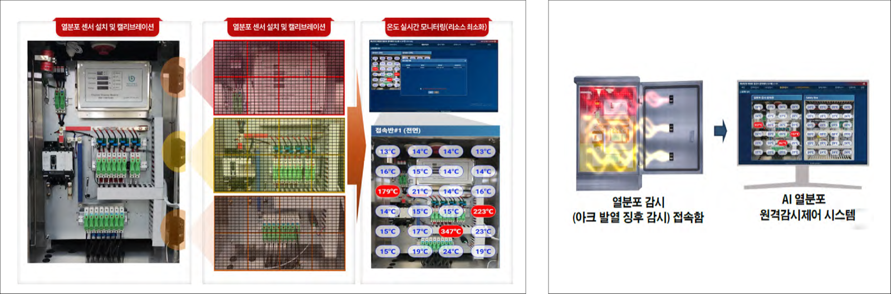
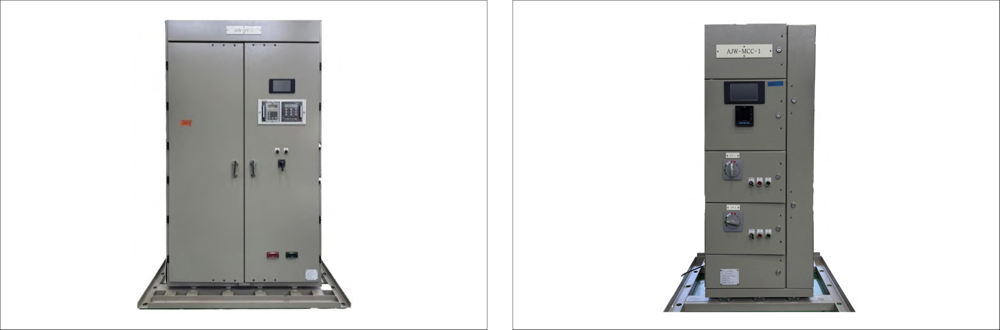
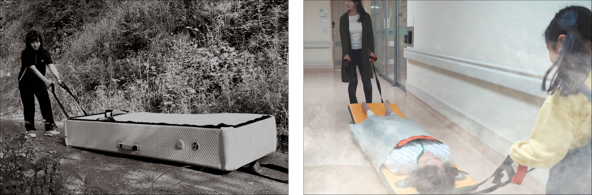
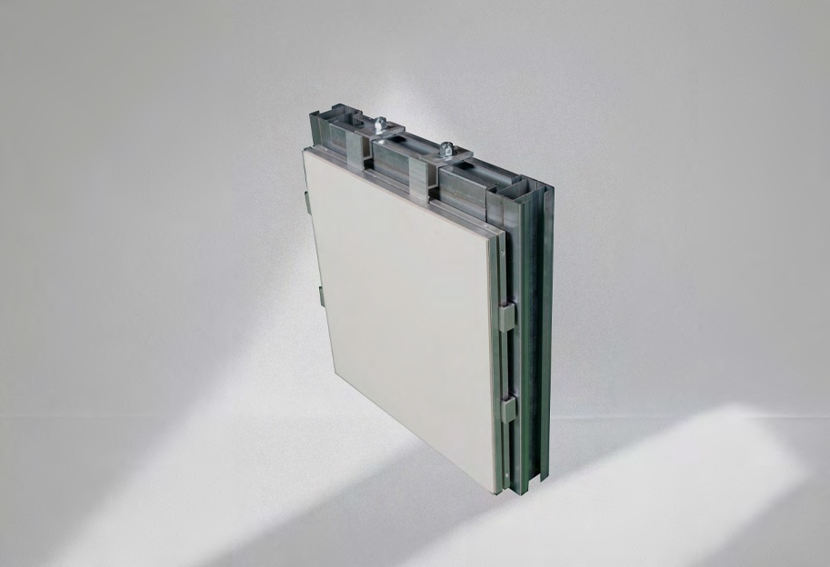
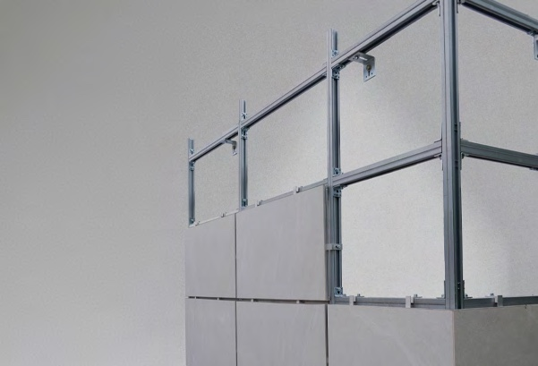

화재의 징후를 먼저 읽고, 위험 구간만 선별적으로 차단하며, 한 명의 생명도 지켜낸다. 재난안전 인증제품은 재난의 예방·대비·대응 및 복구 활동까지 전 주기를 아우르며 국민의 생활과 밀접한 제품으로, 다양한 현장에서 활용 가능한 재난안전인증 제품을 소개한다.
화재 예방 및 전기 안전
접속함 사각지대까지 감시하는 지능형 화재예방 태양광 발전장치
(주)백현이앤에스- 비접촉 열분포 진단기능 기반 지능형 화재 예방 태양광 발전장치
태양광 발전설비 중 화재 발생 빈도가 가장 높은 곳이 접속함 내부다. 이곳에 비접촉 열분포 센서를 설치해 사각지대 없이 발열을 실시간으로 감시한다. 과열·연기 등 이상 징후가 발생하면 통합 관제 모니터링 시스템과 연동해 해당 채널만 자동으로 차단하는 지능형 화재예방 장치다. 임베디드 엣지* 분산 처리 기술을 적용해 통신 리소스를 최소화하면서도 실시간 대응이 가능하다. 설비 전체를 멈추지 않고 위험이 발생한 구간만 선택적으로 차단해 피해를 최소화한다. 산간·오지, 수상 태양광 등 상시 점검이 어려운 환경에서도 원격으로 안전 상태를 모니터링할 수 있어 유지보수 부담도 줄일 수 있다.
*임베디드 엣지(Embedded Edge): 중앙 서버를 거치지 않고 현장 장치가 직접 데이터를 처리해 응답 속도를 높이는 기술
[모델명 BH-CS-RSD]

Key Points화재 위험이 가장 높은 접속함을 사각지대 없이 감시하고, 이상 발생 시 해당 구간만 자동 차단
기업 홈페이지 바로가기규모 8.3 지진에도 전력을 지키는 배전반
(주)주왕산업 - 활선 및 부분방전 감지 기술을 적용한 고압배전반
이 제품은 아파트나 공장 등에 안전하게 전기를 공급하는 고압배전반 장치다. 높은 전압을 낮추어 주는 고압배전반에 절연애자(절연체)를 활용한 기술을 더했다. 전기가 흐르는 상태에서 불꽃(아크)이나 전류가 새는 현상을 미리 감지해 사고를 막아준다. 감지된 신호를 저역통과·고역통과 필터로 분리해 활선 여부와 부분방전 발생을 각각 감지·경보하며, LED 표시부로 상태를 직관적으로 보여준다. 도어 개폐 및 작업자 접근까지 감지해 감전·전기화재 사고를 예방한다. 규모 8.3 지진에서도 안정적으로 전원을 공급할 수 있도록 설계돼 재난 상황에서도 끊기지 않는 전력공급이 필요한 공공기관·산업시설에 적합하다.
[모델명 AJW-HV-1]

Key Points활선·부분방전 실시간 감지와 규모 8.3 내진 성능으로 전기화재와 지진 피해를 동시에 예방
재난 현장 대응 및 구조
1명의 구조자로도 ‘충분’ 5초 만에 펼쳐지는 이송장비
(주)골든아워- 팽창식 환자이송용 에어캡슐
화재, 지진, 건물붕괴, 수난사고 등 다양한 재난 현장에서 거동이 불편한 환자와 안전취약계층을 신속하게 구조하기 위한 자동팽창식 이송장비다. 에어백 원리로 일반형은 약 5초, 범퍼형은 약 15초 만에 자동으로 팽창된다. 충격흡수형 에어쿠션과 신체고정벨트, 360도 회전바퀴를 적용해 기존 들것이라면 3~4명이 필요했던 이송을 구조자 1명만으로도 안정적으로 수행할 수 있다. 화재 시에는 연기와 낙하물로부터 요구조자를 보호하고, 범퍼형은 침수지역에서 부력을 이용해 구명보트로도 활용할 수 있어, 하나의 장비로 여러 재난 유형에 대응하는 복합재난 대응형 구조장비다.
[모델명 일반형 에어캡슐, 범퍼형 에어캡슐]

Key Points구조인력 3~4명을 1명으로 줄이는 5초 자동팽창 이송장비, 침수에는 구명보트로도 활용
기업 홈페이지 바로가기지진·풍수해 대비 건축자재
용접 없이도 지진과 강풍을 견디는 외장 패널
주식회사 제일에프앤씨_내진 및 내풍압 성능이 향상된 무용접 세라믹 박판 패널 시스템
지진이나 강풍 발생 시 건축물 외장재가 탈락하면 인명 피해로 이어진다. 이를 막기 위해 개발된 무용접 방식의 세라믹 박판 외장 패널 시스템. 아연도금강재 하지프레임과 알루미늄 고정클립으로 용접 없이 조립하며, 패널과 하지구조가 독립적으로 움직이는 PBSD(성능기반 분리거동 설계) 구조를 적용해 지진·풍압으로 인한 응력을 분산시켜 외장재 탈락을 막는다. 내진성능 검증 시험(AC156 인공지진시험)에서 최대 1.0g, 내풍압 8,580Pa, 층간변위 ±150mm 성능을 확보했다. 무용접 시공으로 품질 균일성과 시공성을 동시에 높여 공공건축물, 학교, 병원, 데이터센터 등 중요 시설의 외장 안전을 강화한다.
[모델명 JST-200]


Key Points무용접 조립과 PBSD 분리거동 구조로 지진·강풍에도 외장재 탈락 없이 건축물 안전을 지킨다
기업 홈페이지 바로가기다른 재난안전 인증제품도 있어요!인증 유효기간 2026.06.25. ~ 2029.06.24.
| 기업명 | 인증제품 |
|---|---|
| (주)에스엠전자 | 실시간 감전 안전진단형 내진 저압배전반 |
| (주)대한전공 | 멀티센서 모듈기반 열화감지장치를 내장한 내진 저압배전반·전동기제어반 |
| (주)주왕산업 | 활선 감지 기술을 적용한 저압배전반·전동기제어반 |
| (주)비룡씨에이치씨 | 충격 완화 스프링 댐퍼가 적용된 내진 단열 창호 |
| 기동안전(주) | 내부 정반사 광학구조 및 방열 기술 적용 초저전력 고효율 LED표지판 |
| (주)미산이앤씨 | 바이오탄소 100% 기반 고기능성 수계 세정제 |